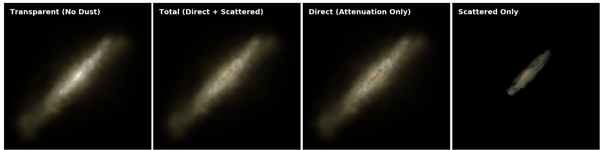
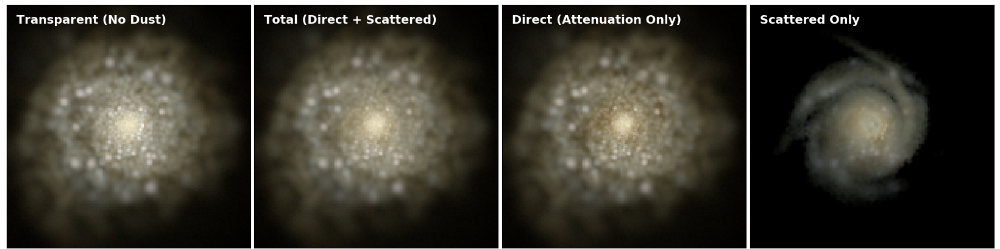
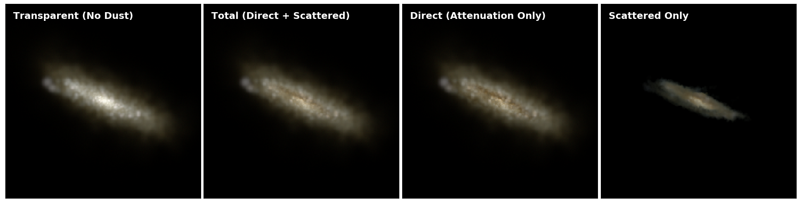

Synthetic images
In Rodriguez-Gomez et al. (2019), we describe a procedure for generating "idealized" synthetic images of galaxies from hydrodynamic cosmological simulations such as Illustris and IllustrisTNG, as well as for applying "realism" to them. Most of the synthetic images in Rodriguez-Gomez et al. (2019) include dust radiative transfer using the SKIRT code, although a simpler (and less computationally expensive) tool, dubbed the GALAXEV pipeline, was developed for the case of galaxies where dust is not expected to have an important effect. The latter pipeline is publicly available on GitHub.The figure below displays three examples (different rows) of randomly chosen, "idealized" composite images of galaxies from the TNG100 simulation, showing the different light components produced by SKIRT (different columns). The GALAXEV pipeline described above generates images that are indistinguishable from those on the left-hand column (no dust).


